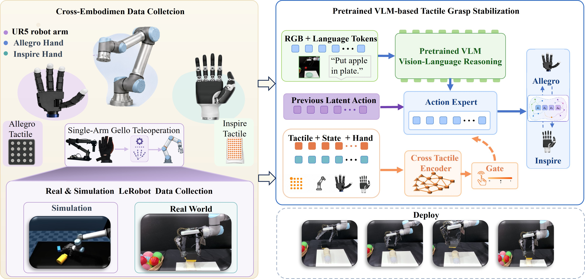
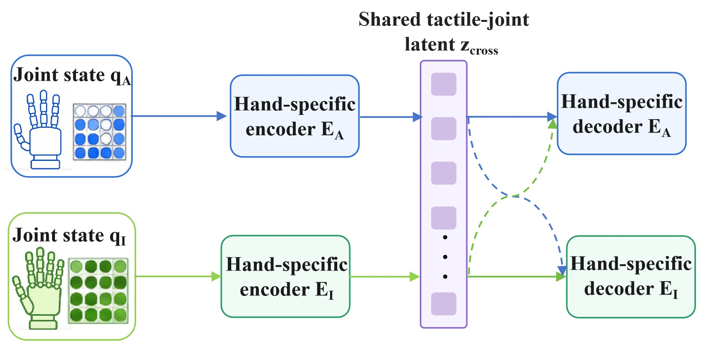
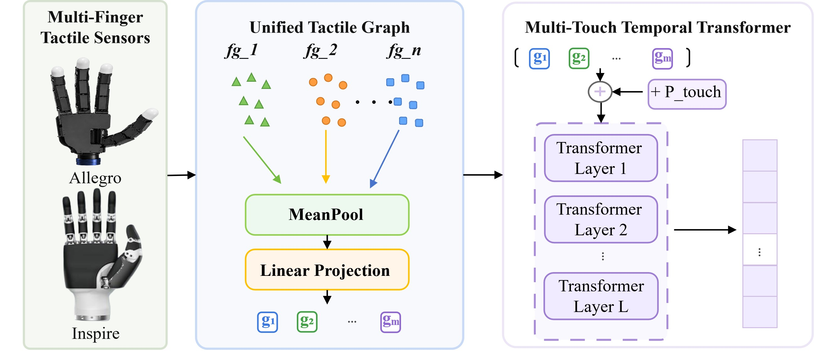

Cross-hand action interface
Allegro and Inspire demonstrations are aligned through joint reconstruction, fingertip geometry, contact consistency, and contact-transition supervision.
Anonymous CoRL 2026 Submission
A frozen cross-hand contact-kinematic action interface lets a VLA policy reuse dexterous manipulation demonstrations across Allegro and Inspire hands, while contact-triggered tactile gating conditions action prediction during physical contact.
Abstract
Vision-language-action policies provide scalable semantic priors for robot manipulation, but multi-fingered dexterous hands remain difficult to transfer across hardware because raw joint actions are hand-specific and contact states are hard to observe visually. TACT-VLA pretrains hand-specific action adapters offline to align joint actions, fingertip geometry, and contact representations into a shared contact-kinematic action interface. During policy training and inference, the adapters stay frozen: the policy predicts a shared hand-action representation and the target-hand adapter generates executable joint commands. A frozen tactile encoder turns multi-touch point arrays into stable tactile features, and a contact-triggered tactile gate passes touch to the action expert mainly during contact-rich phases.
Experiments
Average success rate across four tasks and two test settings.
Percentage-point gain over the best baseline in the reported comparison.
Contact-rich dexterous manipulation task settings.
| Method | Task 1 O | Task 1 G | Task 2 O | Task 2 G | Task 3 O | Task 3 G | Task 4 O | Task 4 G | Avg. |
|---|---|---|---|---|---|---|---|---|---|
| ACT | 13/20 | 14/20 | 7/20 | 9/20 | 6/20 | 3/20 | 6/20 | 4/20 | 38.8% |
| RDT | 15/20 | 16/20 | 8/20 | 12/20 | 12/20 | 8/20 | 5/20 | 7/20 | 51.9% |
| π0 | 15/20 | 16/20 | 10/20 | 9/20 | 12/20 | 11/20 | 7/20 | 9/20 | 55.6% |
| π0 + Tactile Backbone | 15/20 | 13/20 | 13/20 | 12/20 | 10/20 | 11/20 | 6/20 | 9/20 | 55.6% |
| Ours | 19/20 | 19/20 | 17/20 | 16/20 | 19/20 | 18/20 | 17/20 | 16/20 | 88.1% |
| Variant | Task 1 | Task 2 | Task 3 | Task 4 | Avg. |
|---|---|---|---|---|---|
| Full model | 19/20 | 17/20 | 18/20 | 16/20 | 87.5% |
| w/o cross-hand action interface | 16/20 | 11/20 | 12/20 | 11/20 | 62.5% |
| w/o multi-touch temporal Transformer | 17/20 | 14/20 | 14/20 | 13/20 | 72.5% |
| w/o tactile gate | 16/20 | 16/20 | 14/20 | 13/20 | 73.8% |
Main Idea
Allegro and Inspire demonstrations are aligned through joint reconstruction, fingertip geometry, contact consistency, and contact-transition supervision.
Multi-touch point arrays are encoded into reusable tactile features so the VLA does not relearn contact geometry from limited demonstrations.
Tactile features are masked in non-contact phases and condition the action expert when contact is established or changing.
A UR5e platform collects vision, language, proprioception, action, and tactile feedback with interchangeable dexterous hands.
Method
The policy receives visual observations, language instructions, robot state, and gated tactile features. Instead of predicting a hand-specific raw joint vector, the action expert predicts a shared contact-kinematic representation. A frozen adapter for the target hand converts that representation into executable joint commands.


The shared interface organizes fingertip geometry, contact state, and contact-transition trends rather than raw joint trajectories. Switching from Allegro to Inspire changes only the frozen target-hand adapter, while the VLA action interface remains shared.
Each touch is modeled as a graph of calibrated contact points with pressure responses. Graph-level features from multiple touches are fused by a temporal Transformer. A pressure-based contact detector decides when tactile features should condition the action expert.

Citation
Replace the anonymous fields with the camera-ready metadata after review.
@inproceedings{anonymous2026tactvla,
title = {TACT-VLA: Tactile-Augmented Vision-Language-Action Models for Multi-Dexterous-Hand Manipulation via Frozen Cross-Hand Contact-Kinematic Mapping},
author = {Anonymous Authors},
booktitle = {Conference on Robot Learning},
year = {2026}
}